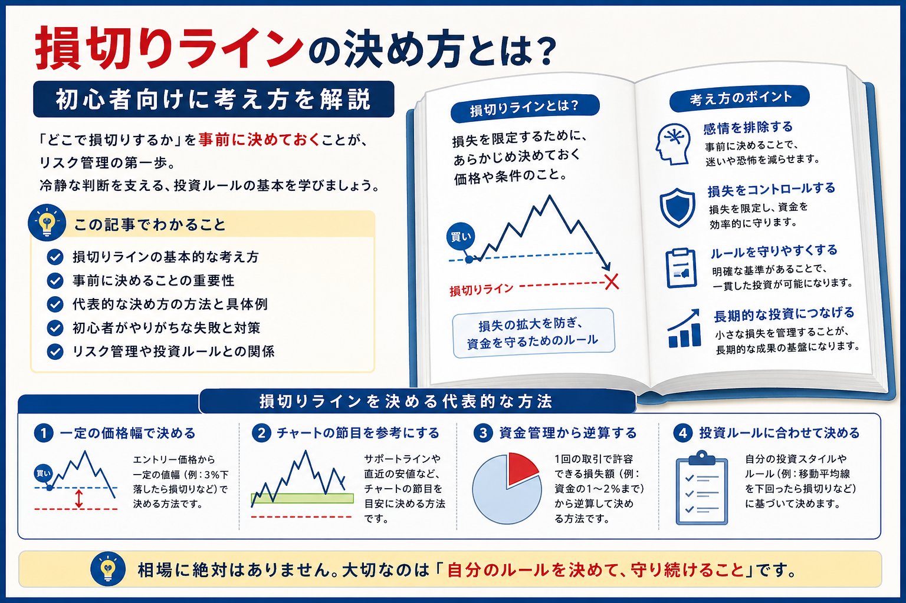

Introduction
損切りは「するかどうか」だけでなく「どこでするか」が重要
損切りラインは、投資で損失を一定範囲に抑えるための基準です。もちろん、どの価格で損切りすれば必ず正解というものではありません。相場に絶対はなく、投資対象や取引期間、資金量によって適切な考え方は変わります。

- 本記事は、特定の価格や銘柄の売買判断を示すものではありません。
- 損切りラインは、投資ルール・資金管理・利益確定の計画と合わせて考えるものです。
- まずは「損失をどこまで許容できるか」を整理することが大切です。
Basic
損切りラインとは？
損切りラインとは、保有している株式・FX・投資商品などが想定と違う方向に動いたとき、損失を限定するために決めておく基準です。価格で決める場合もあれば、「サポートラインを下回ったら」「決算内容が想定と違ったら」など、条件で決める場合もあります。
Price
価格で決める
購入価格から何円下、何％下など、数字で撤退の目安を決める方法です。初心者にも分かりやすい一方で、値動きの大きさに合わないとすぐに引っかかる場合があります。
Condition
条件で決める
チャートの節目を割った、想定していた材料が崩れたなど、投資理由がなくなった時点で撤退する考え方です。
Rule
投資ルールの一部
損切りラインは単独で考えるより、エントリー条件・利益確定・取引数量・資金管理とセットで決めると実践しやすくなります。
損切りの基本から確認したい場合は、先に損切りとは？判断方法の例を解説も参考になります。
Reason
なぜ事前に決めることが重要なのか？
損切りラインを事前に決める目的は、未来を正確に当てることではありません。価格が不利に動いたときでも、感情だけで判断しないようにするためです。
感情的な判断を防ぐ
含み損が出てから考えると「戻るかもしれない」「今売るのはもったいない」と考えやすくなります。事前に基準を作ることで、迷いを減らしやすくなります。
損失拡大を避けやすい
損切りラインがないと、小さな損失が大きな損失に変わることがあります。特にFXや信用取引などレバレッジを使う取引では重要です。
投資ルールを守りやすい
毎回その場で判断すると、取引ごとに基準が変わりやすくなります。事前ルールがあると、取引を振り返るときにも改善点を見つけやすくなります。
長期的な資金管理につながる
1回の損失を限定できれば、次の取引や投資を続ける余力を残しやすくなります。これは資金管理とは？初心者向けに解説にもつながる考え方です。
Methods
損切りラインを考える代表的な方法
損切りラインの決め方は一つではありません。初心者は、次の4つの考え方を知っておくと整理しやすくなります。
一定の価格幅で決める
たとえば、購入価格から「5％下がったら売る」「1万円の損失になったら売る」のように、価格幅や損失額で決める方法です。数字で管理しやすいため初心者にも分かりやすいですが、銘柄や通貨ペアによって値動きの大きさは違います。値動きが大きい商品では、幅が狭すぎると通常の上下で損切りになる場合があります。
チャートの節目を参考にする
サポートライン、直近安値、移動平均線、レンジの下限など、チャート上で意識されやすい価格帯を参考にする方法です。たとえば「直近安値を明確に下回ったら、想定していた上昇シナリオが崩れたと考える」という形です。節目の見方はサポートラインとレジスタンスラインとは？でも確認できます。
資金管理から逆算する
先に「1回の取引で失ってもよい金額」を決め、そこから取引数量と損切りラインを逆算する方法です。たとえば、1回の損失を5,000円までに抑えたいなら、保有数量や値幅を調整します。損切りラインだけでなく、取引数量を小さくすることもリスク管理の一部です。
投資ルールに合わせて決める
短期売買、スイングトレード、長期投資では、損切りラインの考え方が変わります。短期売買では細かい値動きを重視しやすく、長期投資では企業業績や投資理由の変化を重視する場合があります。自分の売買方針が曖昧な場合は、先に投資ルールを決める重要性とは？を整理しておくと判断しやすくなります。
| 方法 | 考え方 | 向いている場面 | 注意点 |
|---|---|---|---|
| 一定の価格幅 | 何円下・何％下など数字で決める | シンプルなルールにしたいとき | 値動きの大きさに合わない場合がある |
| チャートの節目 | 直近安値や支持線を基準にする | チャート分析を使う取引 | ラインは絶対ではなく目安 |
| 資金管理 | 許容損失額から逆算する | 損失額を一定にしたいとき | 取引数量も合わせて調整する |
| 投資ルール | 手法や投資期間に合わせる | 継続的に売買を振り返りたいとき | ルールを後から都合よく変えない |
※ 横にスクロールできます
Risk
損切りラインを決めないと起こりやすいこと
損切りラインがないと、判断の基準が「気分」や「その場の期待」になりやすくなります。
損切りができなくなる
含み損が大きくなるほど、売却する心理的な負担は大きくなります。小さな損で済んだ段階を逃すと、決断しづらくなります。
ナンピンしてしまう
根拠が崩れているのに、平均取得単価を下げるために追加購入してしまう場合があります。詳しくはなぜ人はナンピンしてしまうのか？で整理しています。
損失が大きくなる
損失を放置すると、次の投資に使える資金が減り、取り返そうとする無理な取引につながることがあります。
感情だけで判断してしまう
恐怖や焦り、期待だけで売買すると、判断が一貫しにくくなります。損失時の心理は損失が出ると冷静な判断ができなくなる理由も参考になります。
Mistakes
初心者がやりがちな失敗
損切りラインを決めていても、運用の仕方によってはリスク管理が崩れることがあります。
-
毎回損切りラインを変更する
価格が近づくたびにラインを変えると、最初に決めたルールが機能しません。変更するなら、変更理由を明確にすることが大切です。
-
根拠なく広げてしまう
「もう少し待てば戻るかも」という気持ちだけで損切りラインを広げると、損失が想定以上に大きくなる可能性があります。
-
損失を取り返そうとしてルールを破る
損切り後にすぐ大きな取引をすると、冷静さを失いやすくなります。損失後こそ、取引数量やルールを確認する時間が必要です。
-
損切りだけを意識して利益確定を考えない
損切りラインだけでなく、どこで利益を確定するかも重要です。利益と損失のバランスはリスクリワードとは？や損小利大とは？と合わせて考えると整理しやすくなります。
Mindset
初心者が意識したいこと
損切りラインは、相場を完全に当てるためのものではありません。予想が外れたときに資金を守り、次の判断をしやすくするための基準です。
相場に絶対はない
損切りした後に価格が戻ることもあります。それでも、事前に決めたリスク内で終えることには意味があります。
手法によって異なる
短期売買と長期投資では見るべき基準が違います。自分の投資期間に合ったルールを作ることが大切です。
出口まで考える
損切り・利益確定・保有継続をまとめて考えると判断が安定しやすくなります。売却計画は出口戦略とは？でも解説しています。
エントリー前に損切りラインを考える習慣がつくと、買うタイミングそのものも慎重に見られるようになります。入口側の考え方はエントリータイミングの考え方とは？も参考になります。
Summary
まとめ｜損切りラインはリスク管理の基本
損切りラインは、投資で損失を限定するための基本的な考え方です。事前に決めておくことで、価格が下がったときの感情的な判断を減らしやすくなります。
- 損切りラインは、損失を限定するための価格や条件の基準です。
- 一定の価格幅、チャートの節目、資金管理、投資ルールから考える方法があります。
- 損切りラインを根拠なく広げると、損失が大きくなる可能性があります。
- 利益確定やリスクリワードも合わせて考えると、売買ルールが整理しやすくなります。
次に読むなら、利益側の判断を整理する株はいつ売ればいい？利益確定と損切りの判断基準を解説もおすすめです。
FAQ
よくある質問
-
損切りラインとは何ですか？
損切りラインとは、損失を限定するために事前に決めておく価格や条件の目安です。必ず正解になる価格ではなく、投資ルールや資金管理の一部として考えます。 -
初心者はどのように損切りラインを決めればよいですか？
一定の価格幅、チャートの節目、1回の取引で許容できる損失額、投資ルールなどから考える方法があります。まずは無理のない損失額を決め、そこから逆算すると整理しやすいです。 -
損切りラインは毎回同じで良いですか？
毎回同じ幅にする方法もありますが、銘柄や通貨ペアの値動き、投資期間、取引数量によって適切な幅は変わります。同じにするより、ルールに沿って一貫して決めることが大切です。 -
損切りラインを決めても変更して良いですか？
相場環境や前提が変わった場合に見直すことはあります。ただし、損失を認めたくない気持ちだけで根拠なく広げると、リスク管理が崩れやすくなります。
Next Step
損切りだけでなく、出口全体を決めておく
売買判断を安定させるには、損切りラインだけでなく、利益確定・保有継続・再エントリーの条件も合わせて整理しておくことが大切です。
一般ユーザー目線の体験でおすすめの会社をご紹介

ご利用にあたっての注意事項
本記事は情報提供を目的としており、投資の勧誘を目的としたものではありません。株式・投資信託・外国証券・FX等の取引は元本保証がなく、相場変動や為替変動等により損失が生じる場合があります。取引開始前に、契約締結前交付書面や商品説明書、目論見書等を必ずご確認のうえ、ご自身の判断と責任でお取引ください。